Windows Internals
Windows Processes
A process represents the execution of a program. While an application can contain multiple processes, each process has the resources needed to run its associated program. According to Microsoft, a process includes:
Virtual address space
Executable code
Open handles to system objects
Security context (user, privileges, and security groups)
Unique process identifier (PID)
Environment variables
Priority class
Minimum and maximum working set sizes
At least one thread of execution
Every Windows application corresponds to at least one process, and many core system functions are implemented as processes. Examples include:
MsMpEng – Microsoft Defender
wininit – Core system initialization (keyboard, mouse)
lsass – Credential storage and authentication
Attackers can target processes to evade detection or disguise malicious activity, using techniques such as Process Injection , Process Hollowing and Process Masquerading.
High-Level Process Components
Observing processes in Windows
Task Manager provides key process details:
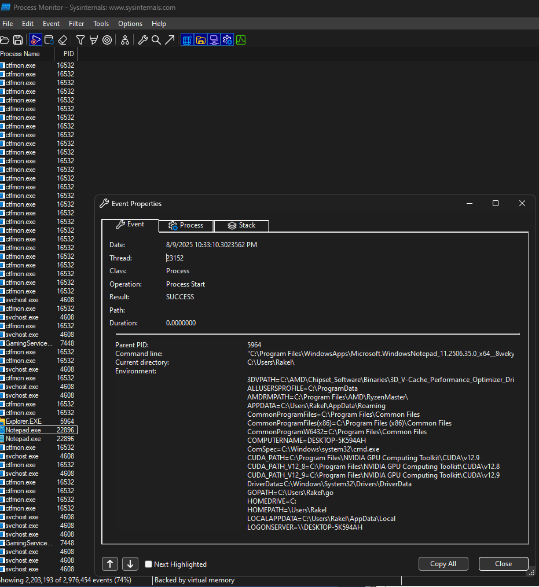
Threads
A thread is an executable unit within a process, scheduled for execution based on factors such as CPU and memory specifications, priority, and other logical considerations. In simpler terms, a thread is responsible for controlling the execution of a process. Because threads directly manage execution, they are often targeted during attacks. Thread abuse can be performed on its own to achieve code execution or, more commonly, chained with other API calls as part of more complex exploitation techniques.
Threads share the same resources as their parent process, including code, global variables, and other allocated resources. However, they also possess their own unique attributes: the stack holds all data specific to the thread (such as exceptions and procedure calls); Thread Local Storage contains pointers for allocating storage to a unique data environment; each thread has a stack argument (a unique value assigned to it); and the context structure stores CPU register values maintained by the kernel.
Although threads may appear to be simple components, their role in controlling process execution makes them a critical part of Windows internals and a valuable target for security exploitation.
Virtual Memory
Virtual memory is a critical component of how Windows internals operate and interact. It allows internal components to work with memory as if it were physical memory, while preventing collisions between applications. Each process is provided with a private virtual address space, and a memory manager translates these virtual addresses into physical addresses. By avoiding direct writes to physical memory, processes face a reduced risk of causing damage to the system or other applications.
The memory manager handles memory through pages and transfers. When an application uses more virtual memory than its allocated physical memory, the manager can page data to disk to compensate. This mechanism ensures that applications can continue functioning without exhausting system resources.
On a 32-bit x86 system, the theoretical maximum virtual address space is 4 GB, divided equally:
Lower half (
0x00000000–0x7FFFFFFF): allocated to processesUpper half (
0x80000000–0xFFFFFFFF): reserved for OS memory utilization
Administrators can modify this split using increaseUserVA or AWE (Address Windowing Extensions) for applications needing a larger process address space.
On a 64-bit modern system, the theoretical maximum expands to 256 TB, maintaining the same process/OS split ratio. With this significantly larger limit, most issues requiring increaseUserVA or AWE are effectively eliminated.
While virtual memory may seem like a background technical detail, understanding it is crucial for leveraging and potentially abusing Windows internals, especially in scenarios involving memory manipulation or low-level exploitation.
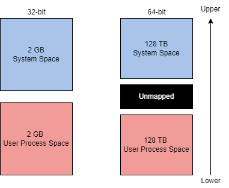
Dynamic Link Libraries
The Microsoft documentation defines a DLL (Dynamic-Link Library) as “a library that contains code and data that can be used by more than one program at the same time.” DLLs are a core part of application execution in Windows, enabling modularization, code reuse, efficient memory usage, and reduced disk space. This allows both the operating system and applications to load faster, run faster, and take up less disk space.
When a DLL is loaded as a function dependency in a program, the program becomes reliant on it. This creates an attack surface, since targeting a DLL can allow an attacker to influence execution or modify functionality without directly altering the application itself. Common malicious techniques include:
DLL Hijacking (T1574.001)
DLL Side-Loading (T1574.002)
DLL Injection (T1055.001)
DLLs are created similarly to standard programs, but require slight syntax modifications to function as libraries. For example, the following is a simple DLL from a Visual C++ Win32 Dynamic-Link Library project:
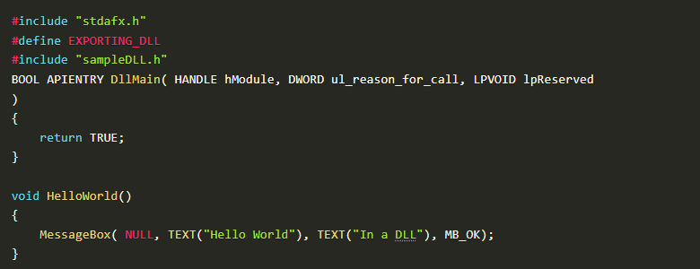
The header file defines the functions that are imported and exported:
cpp
CopyEdit
#ifndef INDLL_H
#define INDLL_H
#ifdef EXPORTING_DLL
extern __declspec(dllexport) void HelloWorld();
#else
extern __declspec(dllimport) void HelloWorld();
#endif
#endif
DLLs can be integrated into applications using two main methods:
1. Load-time dynamic linking The DLL is linked at program startup, with explicit function calls in the application. This requires a header (.h) and an import library (.lib) file. Example:
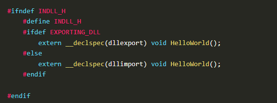
2. Run-time dynamic linking The DLL is loaded during execution using LoadLibrary or LoadLibraryEx, and GetProcAddress is used to locate the exported function before calling it:
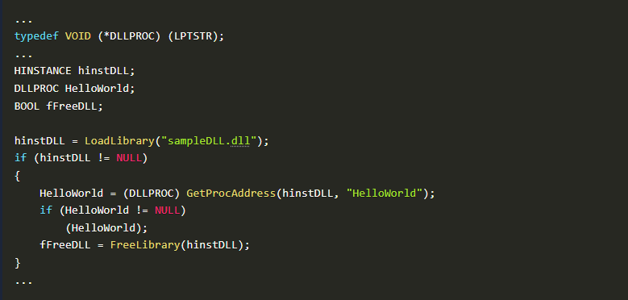
Portable Executable Format
Executables and applications form a large part of how Windows internals operate at a higher level. The Portable Executable (PE) format defines the information about an executable and its stored data, as well as the structure for how that data is organized. The PE format applies to both executable files and object files, and is built on two main file types:
PE (Portable Executable) files
COFF (Common Object File Format) files
PE data is often seen in the hex dump of an executable. Using calc.exe as an example, the PE structure can be broken into seven components.
DOS FormatDefines the type of file. The MZ DOS header indicates the file is an .exe.
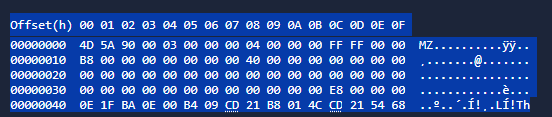
Here is an example of a hex dump:Dos Stub
A DOS stub is a small program that runs by default at the beginning of a file, and displays a compatibility message: “This program cannot be run in DOS mode”
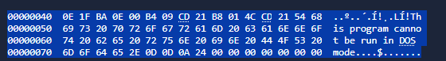
PE File Header
Contains the PE signature, image file header, and additional metadata about the file. This is less human-readable but can be identified by the PE marker:
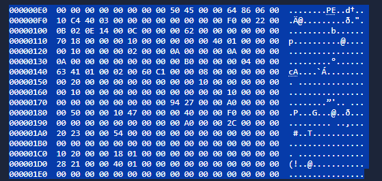
Image Optional Header
Despite its name, this section is critical. It contains important fields, including the Data Dictionaries, which point to the image data directory structure.
Section Table
Defines available sections and their details. Each section contains specific parts of the program:
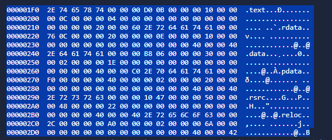
Common Section Purposes
Interacting with Windows Internals
Interacting with Windows internals can seem complex, but one of the most accessible and well-documented methods is through Windows API calls. The Windows API provides native functionality to interact with the operating system, including the Win32 API and, less commonly, the Win64 API.
Most Windows internals components involve interacting with physical hardware and memory. The Windows kernel acts as the controller for all programs and processes, bridging software and hardware interactions. However, applications cannot directly access the kernel or modify physical hardware by default — this is managed through processor modes and access levels.
Windows processors operate in two modes:
Applications in user mode remain there until a system call or API call is made, triggering a mode switch (often referred to as the Switching Point). This switch allows the application to access resources that require kernel mode permissions.
When programming languages interface with the Win32 API, this process may pass through an intermediate runtime. For example, a C# application will first execute through the CLR (Common Language Runtime) before calling into the API and making system calls.
Proof of Concept: Injecting a Message Box into a Local Process
To demonstrate interacting with memory, we can write a simple message box payload into a local process’s memory and execute it. This involves four steps:
Allocate local process memory for the message box.
Write/copy the message box payload into the allocated memory.
Execute the message box from local process memory.
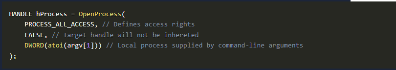
Firstly we open the target process using OpenProcess: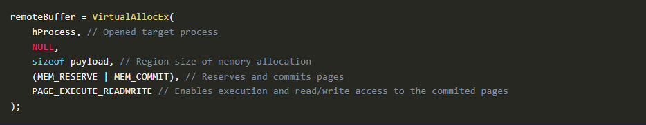
Then we allocate memory in the target process using VirtualAllocEx: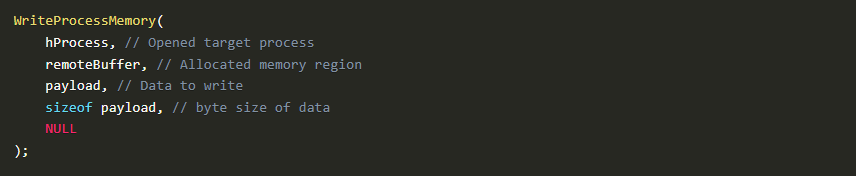
Then we write the payload into allocated memory using WriteProcessMemory: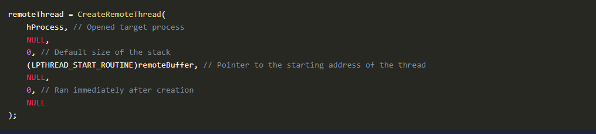
Lastly, we create a remote thread to execute the payload using CreateRemoteThread: